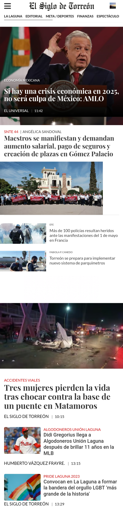
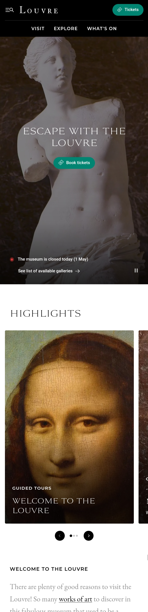

El siglo de Torreon
siglo.com PARC: Proximity. Here at the toolbar all the lements and submenues are all togther thus the eye doesn't have to stop everytime the user wants to look for different news' topic
Toyota USA
toyota.comWhite Space and Clean Design. Toyota website expresses absolutely well how to design with clearness adventaging out of white spaces. Here there are multiple crowdless spaces. You perfectly understand the menu and website.
Louvre Musee
louvre.com Rule of Thirds. Louvre musee.com doesn't follow the explanation from BYU about the rule of three. However it takes adventage of the woderful pictures the website has. Thereby, you see the ost important at the center.